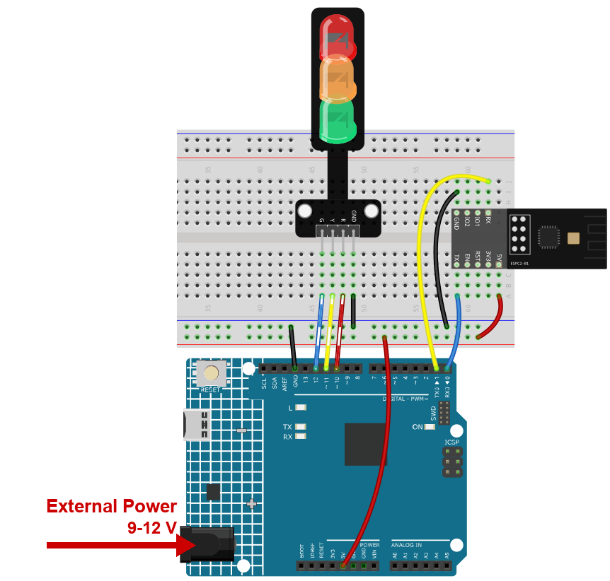
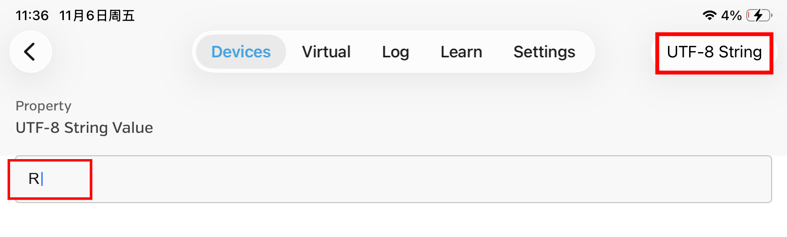

Note
Hello, welcome to the SunFounder Raspberry Pi & Arduino & ESP32 Enthusiasts Community on Facebook! Dive deeper into Raspberry Pi, Arduino, and ESP32 with fellow enthusiasts.
Why Join?
Expert Support: Solve real-life coding problems and technical challenges with our community and team.
Learn & Share: Exchange tips, tutorials, and projects to enhance your skills.
Exclusive Previews: Get early access to new product announcements and sneak peeks.
Festive Promotions and Giveaways: Take part in giveaways and holiday promotions.
👉 Ready to explore and create with us? Click [here] and join today!
9. Bluetooth Traffic Light
Three LEDs stand in for a traffic light. One letter from the phone switches the light: R for red, Y for yellow, G for green.
This is the first project where the phone sends a command instead of text - and it is much shorter than you expect. The sketch looks at single characters, so one letter is already a complete message.
1. Build the Circuit
Note
The module draws a high current at start-up, so make sure the 9 V battery or an external power supply is plugged into the DC jack of the R4 Minima.


2. Upload the Code
Open the
09-Bluetooth_traffic_light.inofile under the path ofultimate-sensor-kit\code\iot_project_espc201\bluetooth\09-Bluetooth_traffic_light, or copy this code into Arduino IDE.Select Arduino UNO R4 Minima and the right port, then click Upload.
Open the Serial Monitor at 115200. You should read:
=== ESPC2-01 Bluetooth (BLE) === [OK] BLE is ready - scan for "SunFounder-C2" on your phone --------------------------------
If you read
[!] no reply from the module, the module is not answering on D0/D1 - check the four wires and the power supply.
3. Control the Light from the Phone
Use LightBlue, the same app as in the Get Started chapter.
Open LightBlue, tap Scan and connect to SunFounder-C2.
Expand the service 0xA002 and open the characteristic C304. Then tap Write new value.

Set the format in the top right corner to UTF-8 String, type a single capital
Rand send it.
The red LED lights up and the other two go out.
Send
Y- yellow. SendG- green.One letter is enough, but a longer word is harmless: the sketch only reacts to the characters it knows and ignores the rest. Type
REDand theRstill works.A lower-case
rdoes not work - the sketch compares against the capital letters only.
Watch the Serial Monitor while you send: each received character is printed on its own line, so you can always tell whether the phone reached the board.

4. Code explanation
The three LEDs
const int rledPin = 10; // red const int yledPin = 11; // yellow const int gledPin = 12; // green
Bluetooth, again in one line
#include "SunFounder_BLE.h" BLEStream bleSerial;
Same object as in the previous chapter.
bleSerial.begin()makes the module advertise as SunFounder-C2; the phone writes into C304 and everything that arrives can be read withbleSerial.read().setup()
void setup() { pinMode(rledPin, OUTPUT); pinMode(yledPin, OUTPUT); pinMode(gledPin, OUTPUT); Serial.begin(115200); bleSerial.begin(); }
loop() - one character at a time
while (bleSerial.available() > 0) { character = bleSerial.read(); Serial.println(character); if (character == 'R') { toggleLights(rledPin); } else if (character == 'Y') { toggleLights(yledPin); } else if (character == 'G') { toggleLights(gledPin); } }
whileinstead ofifis deliberate: several characters may arrive between two passes of the loop, and this way none of them is left in the buffer.The quotes matter -
'R'is the letter R,"R"would be a text of one character.toggleLights()
void toggleLights(int targetLight) { digitalWrite(rledPin, LOW); digitalWrite(yledPin, LOW); digitalWrite(gledPin, LOW); digitalWrite(targetLight, HIGH); }
All three are switched off first, then the wanted one is switched on. That is what keeps a traffic light believable: only one lamp is ever lit.